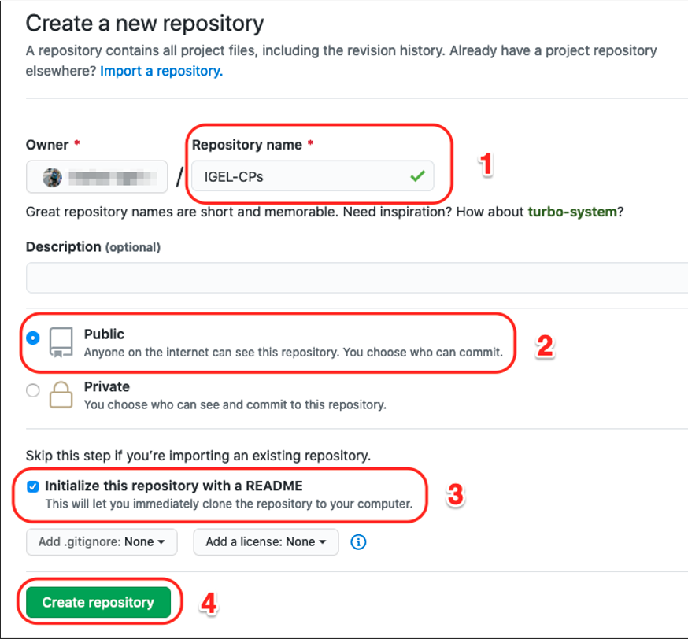
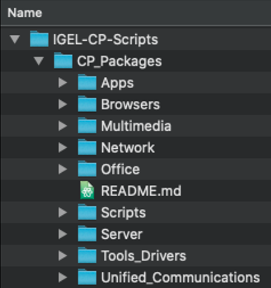
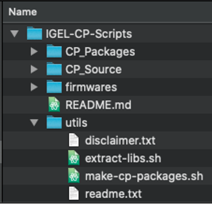
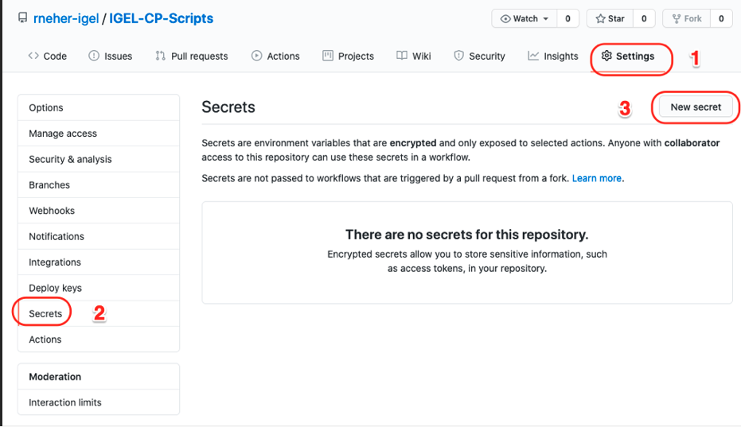

Create GitHub Repository

- Repository name
- Public
- Initialized with README
- Create repository

Setup Files in GitHub Repository

- CP_Source hold the files used to be packaged into CP zip file

- CP_Packages hold the CP zip files

- utils hold the files used in packages (disclaimer, readme)

Create Repository GitHub Personal Access Token
- Settings
- Secrets
- New secret

- Name >
TOKEN
- Value >
TOKEN
- Add secret

Create GitHub Action to Create Custom Partition Zip Package
- Use GitHub Actions to start a virtual machine (VM), use git to pull the repository files into the VM, run script to create Custom Partition (CP) zip files and then update the repository with the zip files.
- The script will create CP zip files if they do not exist or if the files used in the zip file have changed.
- Copy and edit the following code and place into file:
<Repository-home>/.github/workflows/main.yml
1
2
3
4
5
6
7
8
9
10
11
12
13
14
15
16
17
18
19
20
21
22
23 | name: MainDeployCP
on:
push:
branches:
- main
jobs:
build:
runs-on: ubuntu-latest
steps:
- uses: actions/checkout@v1
- name: Create CP packages
run: bash utils/make-cp-packages.sh
- name: git push
run: |
git config --global user.name "My-GitHub-User-Name"
git config --global user.email "My Email Address"
git remote set-url origin https://x-access-token:${{ secrets.GITHUB_TOKEN }}@github.com/$GITHUB_REPOSITORY
git add --all
git commit -m "Updated CP Packages"
git push origin HEAD:main
env:
GITHUB_TOKEN: ${{ secrets.TOKEN }}
REPO_OWNER: My-GitHub-User-Name
|
- Copy the following code and place into file:
<Repository-home>/utils/make-cp-packages.sh
1
2
3
4
5
6
7
8
9
10
11
12
13
14
15
16
17
18
19
20
21
22
23
24
25
26
27
28
29
30
31
32
33
34
35
36
37
38
39
40
41
42
43
44
45
46
47
48
49
50
51
52
53
54
55
56
57
58
59
60
61
62
63
64
65
66
67
68
69
70
71
72
73
74
75
76
77 | #!/bin/bash
shopt -s extglob
# uncomment set and trap to trace execution
set -x
#trap read debug
# Files that have changed in most recent commit
git diff --name-only HEAD HEAD~1
CHANGEDFILES=`git diff --name-only HEAD HEAD~1`
BASEDIR=`pwd`
SRCLOC="$BASEDIR/CP_Source"
ZIPLOCATION="$BASEDIR/CP_Packages"
COMMONREADME="$BASEDIR/utils/readme.txt"
COMMONDISCLAIMER="$BASEDIR/utils/disclaimer.txt"
CATEGORIES="Apps Browsers Multimedia Network Office Scripts Server Tools_Drivers Unified_Communications"
for category in $CATEGORIES; do
cd $SRCLOC/$category;
# look at every folder under the category
for cp in *; do
if [ -d $cp ]; then
zip_needed=false
zip_file="$ZIPLOCATION/$category/$cp.zip";
if [ ! -f $zip_file ]; then
zip_needed=true;
fi
# if the common readme and disclaimer files are newer than the zip file, re-create the zip
if [ "$COMMONREADME" -nt $zip_file ] || [ "$COMMONDISCLAIMER" -nt $zip_file ]; then
zip_needed=true;
fi
echo "category/cp = $category/$cp"
# check the list of changed files in this commit to see if this Custom Partition has changed
if [[ "$CHANGEDFILES" == *"$category/$cp"* ]] ; then
zip_needed=true;
fi
# create the structure needed, then zip the file to the correct location
if $zip_needed; then
echo "Zip needed for cp: $cp"
cd $cp
foldername=`grep -i "cp=" *.sh`
foldername=${foldername/*\//}
foldername=${foldername/\"/}
echo "Folder name: $foldername"
echo "Zip file: $zip_file"
cpt="tmp"
rm -rf $cpt
mkdir $cpt
mkdir "$cpt/igel"
mkdir "$cpt/target"
cp *.xml "$cpt/igel"
cp *.inf "$cpt/target"
cp *.sh "$cpt/target"
cp *.md "$cpt/target"
cp !(*.xml|*.inf|*.sh|*.md|$cpt) "$cpt/target"
cp $COMMONREADME "$cpt"
cp $COMMONDISCLAIMER "$cpt"
cd $cpt
zip -r $zip_file .
cd ..
rm -rf $cpt
cd ..
fi
fi
done
cd ../..
done
|
GitHub + integration for Slack
"The GitHub integration for Slack gives you and your teams full visibility into your GitHub projects right in Slack channels, where you can generate ideas, triage issues and collaborate with other teams to move projects forward. This integration is an open source project, built and maintained by GitHub."
Steps to setup GitHub integration with Slack
- Subscribe to repositories
| /github subscribe IGEL-Community/IGEL-Custom-Partitions
/github subscribe IGEL-Community/IGEL-OS-APP-RECIPES
|